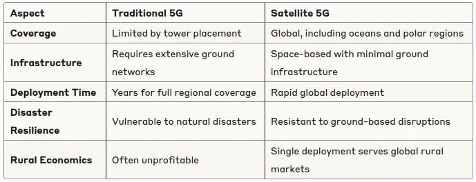

From Ground to Space: The 5G Revolution Above the Clouds¶
Part 1 of 5: The Internet is Moving to Space Series*
The way we connect to the internet is about to change forever. While you’re reading this on your phone or computer, connected through terrestrial networks built over decades, a revolutionary transformation is happening 550 kilometers above your head. The internet is literally moving to space, and satellites are becoming the cell towers of tomorrow.
The Great Connectivity Divide¶
Here’s a sobering reality: despite living in what we call the “connected age,” vast portions of our planet remain digitally isolated. Even in the United States, one of the world’s most connected nations, the rural-urban gap for 5G availability has increased to 10.3 percentage points in Q2 2023.
Traditional cell towers face an insurmountable physics problem. A cell tower can cover 3 to 50 square miles, based on a typical coverage radius of 1 to 4 miles for 4G LTE and 5G cell towers. While this works well in densely populated areas, it creates massive coverage gaps in rural regions, mountainous areas, and remote locations where building infrastructure is economically unfeasible.
But what if we could bypass this limitation entirely? What if, instead of building thousands of cell towers across difficult terrain, we could place them in orbit where a single “tower” could cover thousands of square miles?
Enter the Space-Based Internet Revolution¶
This isn’t science fiction — it’s happening right now. A new generation of satellites is transforming how we think about internet connectivity. Unlike traditional satellite internet that requires bulky dishes and suffers from significant delays, this new approach uses satellites that act as cell towers floating in space.
The key innovation lies in
Low Earth Orbit (LEO) satellite technology. If all current commercial satellite plans were to be realized within the next decade, we would have more than 65 thousand satellites circling Earth, compared to less than 10,000 today. These aren’t your grandfather’s satellites — they’re sophisticated, compact, and designed to work seamlessly with your existing smartphone.
What Makes LEO Satellites Game-Changers?¶
Altitude Advantage¶
Traditional satellite internet relies on geostationary satellites positioned 35,786 kilometers above Earth. LEO satellites operate much closer to Earth — typically between 550 to 1,200 kilometers above the surface. This proximity dramatically reduces signal delay (latency) and increases signal strength.
Network Coverage Revolution¶
LEO satellites operate in a revolving network where multiple satellites are needed to provide internet coverage, allowing them to provide connectivity during air travel and even in the middle of the ocean. Think of it as having thousands of cell towers constantly moving overhead, ensuring you’re always within range of several satellites simultaneously.
Direct Device Connection¶
The most revolutionary aspect? This technology enables direct communication with mobile devices without the need for ground infrastructure, improving global connectivity. Your phone can potentially connect directly to a satellite, eliminating the need for cell towers in remote areas entirely.
How Satellite 5G Actually Works¶
Understanding satellite-based 5G requires grasping three key differences from traditional internet:
1. The Signal Path¶
Traditional 5G: Phone → Cell tower → Fiber network → Internet
Satellite 5G: Phone → LEO satellite → Ground station → Internet
2. The Technology Stack¶
Satellite 5G uses the same 5G New Radio (NR) standards as terrestrial networks, but with modifications for space-based transmission. Sophisticated antennas on each satellite with hopping beams scan the earth to provide full coverage, dynamically adjusting to serve areas with the highest demand.
3. The Coverage Model¶
Instead of static coverage areas, satellite networks provide dynamic, global coverage. LEO satellite constellations will effectively function as a new edge location with high computing capacity that is only one millisecond-hop away from any point on the planet.
The Economic Impact Driving the Revolution¶
The numbers behind this transformation are staggering. The Low Earth Orbit (LEO) Satellite Market grew from US$14.33 billion in 2023 to US$16.17 billion in 2024, expected to reach US$34.33 billion by 2030 with a CAGR of 13.28%.
This isn’t just about technology — it’s about economics. Building traditional infrastructure in remote areas often costs more than the potential revenue justifies. Satellite networks flip this equation: deploy once globally, serve everywhere.
Three Types of Satellite Orbits: Understanding the Differences¶
Before diving deeper into the satellite internet revolution, it’s crucial to understand the different types of satellite orbits and why LEO satellites are revolutionizing connectivity:
Geostationary Earth Orbit (GEO) — 35,786 km altitude¶
Pros: Stationary relative to Earth, consistent coverage of fixed areas
Cons: High latency (250–500ms round-trip), expensive to launch and maintain
Use: Traditional satellite TV, weather monitoring, some internet services
Medium Earth Orbit (MEO) — 2,000–35,786 km altitude¶
Pros: Lower latency than GEO (70–100ms), fewer satellites needed than LEO
Cons: Still higher latency than LEO, complex orbital mechanics
Use: GPS systems (around 20,000 km altitude), some satellite phone services
Low Earth Orbit (LEO) — 200–2,000 km altitude¶
Pros: Very low latency (6–50ms), strong signal strength, lower launch costs
Cons: Requires large satellite constellations, satellites constantly moving, complex ground coordination
Use: Modern satellite internet (Starlink, OneWeb), direct-to-cell services
The revolution is happening in the LEO space because these satellites can provide internet speeds and responsiveness that rival terrestrial networks while covering the entire planet.
Real-World Applications: Beyond Just Internet¶
Satellite 5G isn’t just about browsing the web in remote locations. LEO satellites are set to revolutionize multiple industries by providing global broadband coverage, enhancing Internet of Things (IoT) and machine-to-machine (M2M) communications.
Consider these transformative applications:
Emergency Services: First responders can maintain communication even when terrestrial networks fail
Maritime Operations: Ships can access high-speed internet anywhere on the ocean
Aviation: Passengers enjoy seamless connectivity throughout their flight
Remote Work: Professionals can work from literally anywhere on Earth
Agricultural IoT: Farmers can monitor crops and livestock in real-time, regardless of location
The Traditional vs. Satellite 5G Paradigm Shift¶

What’s Coming Next in This Series¶
This foundational understanding sets the stage for our deep dive into the satellite internet revolution. In the coming parts of this series, we’ll explore:
Part 2: Meet the space giants — SpaceX Starlink, Amazon’s Project Kuiper, and other companies racing to build the internet in the sky
Part 3: The great comparison — how satellite 5G stacks up against traditional internet in speed, cost, and real-world performance
Part 4: The challenges and dark sides of space-based internet that companies don’t want you to know about
Part 5: Your future with space internet — practical timelines and what you need to prepare for
The Revolution Has Already Begun¶
With several constellations of small satellites planned to be deployed in Low Earth Orbit (LEO), remote and underserved regions will have access to high-speed internet services, bridging the digital divide significantly.
We’re witnessing the early stages of humanity’s next great infrastructure leap. Just as the telegraph gave way to telephone lines, and telephone lines gave way to cellular networks, we’re now transitioning from ground-based to space-based internet infrastructure.
The question isn’t whether this transformation will happen — it’s already underway. The real questions are: How fast will it happen? Which companies will dominate? And how will it change your digital life?
In our next installment, we’ll meet the space giants making this revolution possible and explore the billion-dollar race to control the internet infrastructure of tomorrow.
This is Part 1 of our 5-part series “The Internet is Moving to Space.” Follow along as we explore how satellites are becoming the cell towers of the future, who’s building them, and what it means for your connected life.
Next Week: “Space Giants: Who’s Building the Internet in the Sky” — Meet SpaceX, Amazon, and the other companies racing to control space-based internet infrastructure.
References¶
Fortune Business Insights — LEO Satellite Market Report 2024
OpenSignal — State of Mobile Network Experience 2023
FCC — Broadband Availability and Access Report 2024
Satellite Industry Association — Market Analysis 2024
IEEE Communications Magazine — Satellite 5G Networks Technical Review
[1] https://medium.com/@kcl17/from-ground-to-space-the-5g-revolution-above-the-clouds-f7ab153b29a8